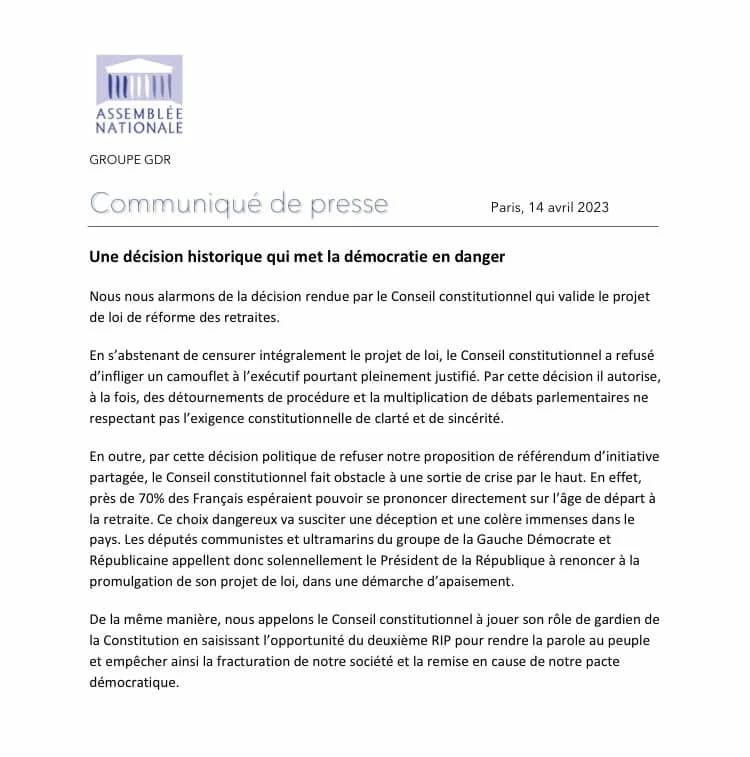

Publication d’archives
Une décision du conseil constitutionnel qui met notre démocratie en danger.
Date indiquée par Facebook · 14 avril 2023
Texte conservé avec la publication
Contexte du dossier
L’appel au 6 avril et la vidéo de l’onzième journée à Bressuire soulignent une colère persistante. Pour le 13, l’archive détaille les manifestations dans les quatre villes, un rendez-vous devant le MEDEF à Niort, un barrage filtrant vers Faye-l’Abbesse et un barbecue militant à Parthenay ; elle annonce aussi un rassemblement préfectoral le 14. La décision du Conseil constitutionnel, validant la réforme et rejetant le premier RIP, est dénoncée par les groupes communistes du Sénat et de l’Assemblée comme une crise démocratique. Leurs communiqués en images ne sont pas transcrits dans ces légendes. Les appels des 15 et 16 maintiennent le refus des 64 ans et préparent le 1er Mai. Après le second rejet du RIP, les sénateurs CRCE demandent à Macron un référendum au titre de l’article 11.

Sources
Archive rouge · export Facebook · AR-0002-FB-01689
À lire aussi · 1er Mai